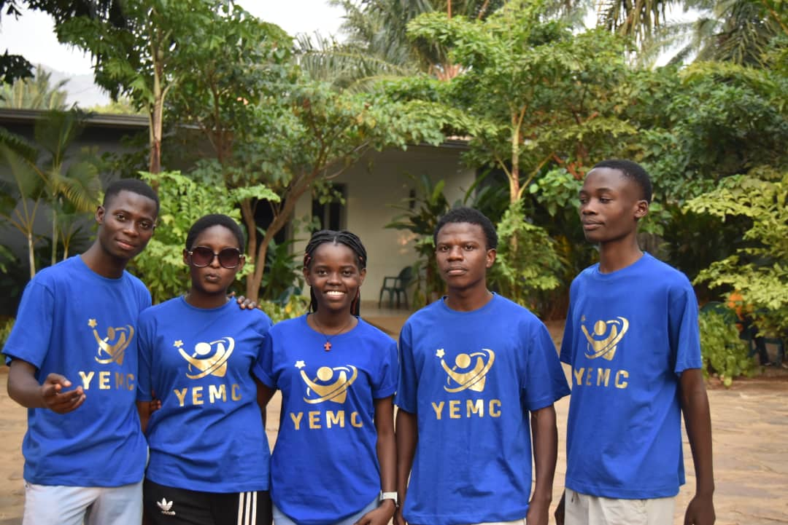

Young Entrepreneurs Mugara Changemakers (YEMC) brings together high school students and high school graduates from the Mugara community. Many young people in this area face unemployment, limited access to personal development, and a scarcity of information about opportunities.
YEMC began with young people full of ambition and hope for the future. The unity and spirit behind every effort made the learning process unique, carrying the message: we can, and we will do it.
Why It Matters
Changing mindsets, step by step and heart by heart.
In Mugara, education has often been overlooked and not given the importance it deserves. Many young people have grown up believing that school is not for them, and countless dreams have been cut short.
Through YEMC, we are working to change this mindset. Curiosity is growing, minds are opening, and a new belief in the power of education is being born.
